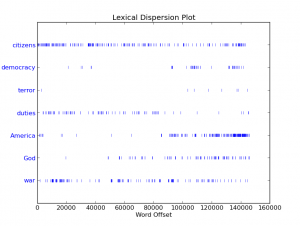
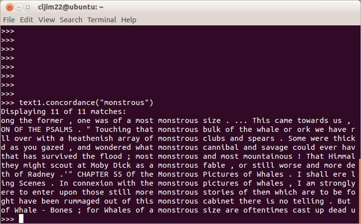

{kind=link}

[/caption] Since the end of the academic year, I've been able to focus a lot more attention on my post-doc research. This included a research trip in London archives and a week long course on databases at the Digital Humanities Institute in Victoria. Now I've started focusing on learning a programing language called Python. In the short-term, I don't need to learn advanced computer skills for the Trading Consequences, as we have a team of highly skilled computer and linguistic experts. However, I do need a basic understanding of what we are actually doing when we text mine historical documents and looking forward to the end of the grant, I would like to be able to continued to work with the database. I would also like to develop the skills to continue this kind of research on my own in the future. I always intended to start with the Programming Historian, but the new version will not come out for another few weeks, so instead, I began working through Learning Python the Hard Way over a few days in May. This was interesting, but solely focused on teaching programing and not particularly connected to the kind of research I would like to do. A few days ago I took a closer look at Natural Language Processing with Python, written by Steven Bird, Edward Loper and one of Trading Consequences team members, Ewan Klein. Reading the preface, it became clear the book was accessible people with no background in programming. The early chapters included both an introduction to computational linguistics and Python. Having worked through the first chapter, I would argue it is a lot more interesting to learn to program using this approach. There is no "Hello World" section and instead, after a very quick introduction to doing basic math in Python, the book starts playing with a series of nine texts (i.e. Moby Dick, Inaugural Address Corpus, Sense and Sensibility), and in doing so it demonstrates the utility of the toolkit. Before explaining what a "function" is in Python, the book shows us how they work by using -- >>> text1.concordance("monstrous") -- to search for all of the instances of the word "monstrous" in Moby Dick and displaying them in context.{kind=link}

Throughout the rest of the first chapter, the authors alternate between demonstrating Natural Language methods and then explaining the programing concepts used in the previous examples. Throughout the process they have you doing really interesting things, which reinforce the value in learning to program. For example, already on page 6 you create a visualization (see above) of the frequency of different terms in US Presidential Inaugural Addresses. In the pages that followed, they take you through some of the many challenges involved in teaching computers to deal with language. As historians begin to face the growing number large collections of digital historical sources (think about the size of the Internet Archive or Canadiana.ca), we'll need to learn more about natural language processing. Wikipedia currently defines Natural Language Processing as "a field of computer science, artificial intelligence (also called machine learning),[1] and linguistics concerned with the interactions between computers and human (natural) languages. Specifically, it is the process of a computer extracting meaningful information from natural language input and/or producing natural language output." The Natural Language Toolkit, which is designed for ease of use, is an ideal starting place (along with the soon to be released Programming Historian 2) for historians interested diving into computer programming.